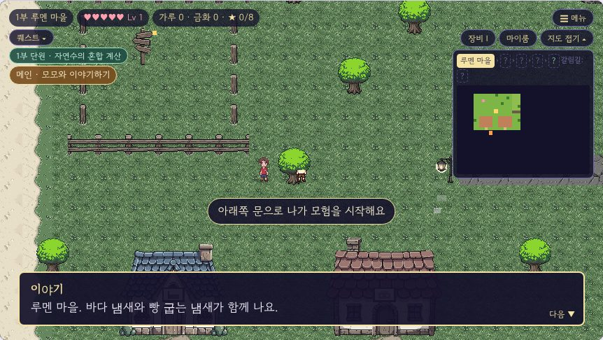
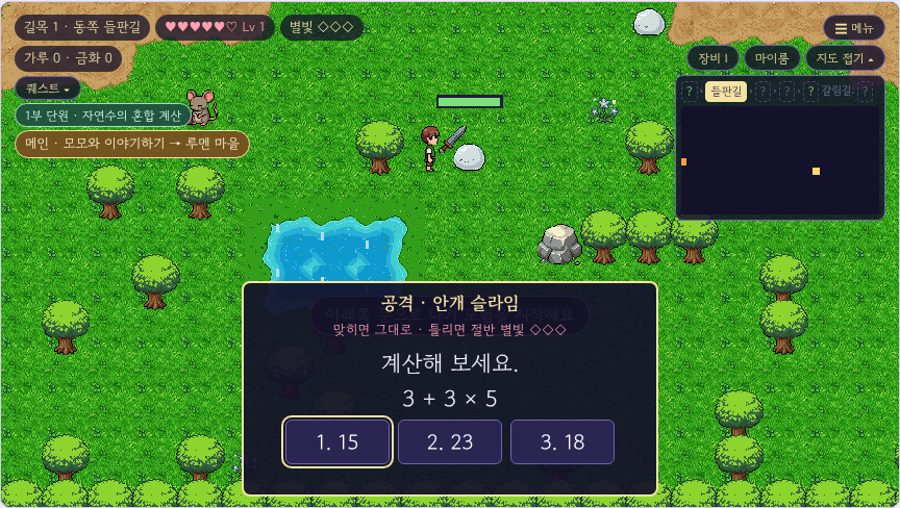
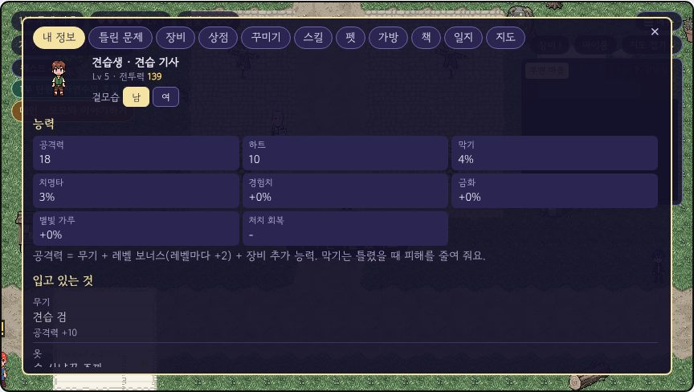
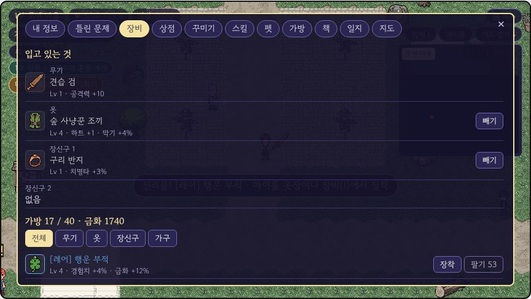
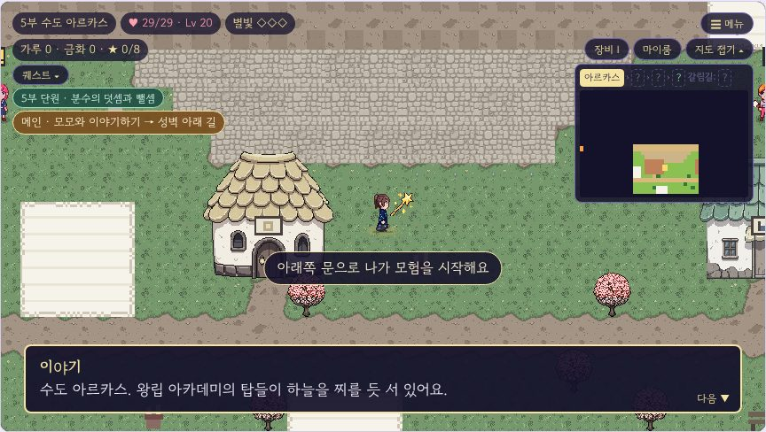
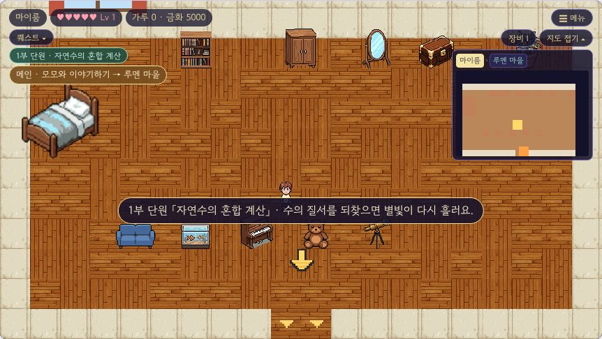

배운 것이 별빛이 되는 왕국의 1년 — 초등 3~6학년 학급용 학습 RPG
1년 12부 이야기 = 수학 12단원(1학기 6부 · 2학기 6부) · 지문 읽기 105편 · 영어 단어 선택 가능


게임 안 숫자: 1년 지문 105편 · 퀘스트 55개 · 몬스터 32종 · 들어갈 수 있는 건물 47곳 · 장비·가구 81종.
| 할 일 | 키보드 | 태블릿·휴대폰 |
|---|---|---|
| 걷기 | 방향키 또는 W A S D | 왼쪽 아래 방향 버튼 |
| 말 걸기·조사·읽기 | 스페이스 / 엔터 | 오른쪽 '조사' 버튼 |
| 공격 | Q | '공격' 버튼 |
| 스킬 | E R T Y (Lv 1·3·5·7에 칸이 열림) | 공격 버튼 위의 스킬 버튼 줄 |
| 점프(울타리·바위·개울) | J 또는 Z | '점프' 버튼 |
| 문제 답 | 1 2 3 | 답 버튼 누르기 |
| 장비·가방 | I | 오른쪽 위 '장비' 버튼 |
| 지도 접기/펴기 | M | '지도' 버튼 |
게임 화면 위쪽 「선생님 설정」 버튼(또는 메뉴 ☰ → 선생님 설정)에서 바꿔요. 설정은 그 기기에 저장돼요.
| 항목 | 고를 수 있는 것 | 설명 |
|---|---|---|
| 학년 | 3·4·5·6학년 | 문제 은행의 그 학년 단원 문제가 나와요. |
| 지문 수준 | 학년에 맞춤 / 심화 | 3~4학년용·5~6학년용·심화 지문 중에서 채워요. |
| 과목 | 수학 / 영어 단어 / 섞기 | 섞기는 수학 7 : 영어 3 정도로 나와요. |
| 문제 범위 | 부에 맞춘 단원 / 학기 전체 섞기 | '부에 맞춘 단원'은 N부에서 그 학기 N단원 문제만 내요. |
길목이 깊을수록(1~5단계) 같은 단원 안에서 더 어려운 문제가 나와요. 보기는 3개(정답 1 + 오답 2)예요.
| 부 | 마을 | 3학년 | 4학년 | 5학년 | 6학년 |
|---|---|---|---|---|---|
| 1부 | 루멘 마을 | 덧셈과 뺄셈 | 큰 수 | 자연수의 혼합 계산 | 분수의 나눗셈 |
| 2부 | 루멘 항구 | 평면도형 | 각도 | 약수와 배수 | 각기둥과 각뿔 |
| 3부 | 이끼골 | 나눗셈 | 곱셈과 나눗셈 | 규칙과 대응 | 소수의 나눗셈 |
| 4부 | 철의 도시 카르딘 | 곱셈 | (준비 중 → 앞 단원 복습) | 약분과 통분 | 비와 비율 |
| 5부 | 수도 아르카스 | 길이와 시간 | (준비 중 → 앞 단원 복습) | 분수의 덧셈과 뺄셈 | (준비 중 → 앞 단원 복습) |
| 6부 | 왕궁 광장 | 분수와 소수 | 규칙 찾기 | 다각형의 둘레와 넓이 | 직육면체의 부피와 겉넓이 |
| 7부 | 다시 찾은 루멘 | 곱셈 | 분수의 덧셈과 뺄셈 | 수의 범위와 어림하기 | 분수의 나눗셈 |
| 8부 | 보리내 | 나눗셈 | 삼각형 | 분수의 곱셈 | 소수의 나눗셈 |
| 9부 | 하늘 도서관 (꿈속) | 원 | 소수의 덧셈과 뺄셈 | 합동과 대칭 | (준비 중 → 앞 단원 복습) |
| 10부 | 하얀 언덕 | 분수 | 사각형 | 소수의 곱셈 | 비례식과 비례배분 |
| 11부 | 망각의 탑 | 들이와 무게 | (준비 중 → 앞 단원 복습) | 직육면체 | 원의 넓이 |
| 12부 | 다시 쓰는 별 | 자료의 정리 | 다각형 | 평균과 가능성 | 원기둥, 원뿔, 구 |
1~6부는 1학기, 7~12부는 2학기 단원이에요. '준비 중'인 단원은 문제 은행에 아직 없어서 그 앞 단원들을 복습 문제로 내요.




마을 건물 47곳에 들어갈 수 있어요. 문 앞에서 조사하면 들어가요.
| 건물 | 안에서 하는 일 |
|---|---|
| 상점·가게·대장간·공방 | 주인에게 말 걸면 상점이 열려요. |
| 숙소·여관·기숙사 | 침대·주인에게 말 걸면 하트가 다 차요. |
| 도서관·서고·서점·기록 보관소 | 서고지기가 오답 노트를 함께 봐요. |
| 길드·본부·천막 | 다음에 할 일을 알려 줘요. |
| 집 | 주민 이야기, 상자 선물(처음 한 번). |
메뉴 ☰ 에서: 글자 크게 · 대사 읽어 주기(브라우저 음성) · 흔들림 끄기 · 소리 끄기 · 옛 그림/새 그림(느린 기기는 옛 그림이 가벼워요) · 전체 화면.
| 질문 | 답 |
|---|---|
| 학생이 진행을 잃어버렸어요. | 다른 기기·다른 브라우저로 열었거나 방문 기록을 지운 경우예요. 같은 기기를 쓰게 해 주세요. |
| 처음부터 하고 싶어요. | 화면 위 '처음부터'를 4초 안에 두 번 누르면 저장이 지워져요. |
| 문제가 너무 어렵거나 쉬워요. | 선생님 설정의 학년·문제 범위를 바꿔요. 길목이 깊을수록 어려워요. |
| 영어도 하고 싶어요. | 과목을 '영어 단어' 또는 '섞기'로 바꿔요. |
| 숨은 요소가 궁금해요. | 별고양이 12마리, 반응하는 사물, 비밀 서고, 떠돌이 상인 등이 있어요. 위치는 docs/비밀_목록.md(선생님용). |
그림: 인물·몬스터·지도는 PixelLab으로 그렸어요. 문제 은행은 Pesk 문제 은행(quiz-bank.js)을 써요.